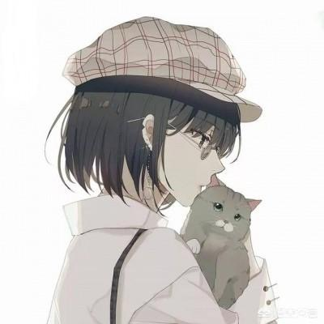
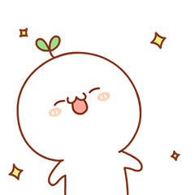

Amy Lin

"I am a upcoming senior in High School For Dual Language and Asian Studies.
My favorite color is blue, black and white.
My favorite subject is math and art. My hobbies include drawing, listening to music, playing pingpong etc."
While in high school, I had the chance to participate in a after-school coding program. I especially liked my time coding in the program, so I wish to continue coding by attending Girls Who Code.
I plan to attend college and major in a computer science or related field.
Jenny Xiao
"I am a upcoming senior in High School For Dual Language and Asian Studies.
My favorite colors are grey, black and white.
My favorite subject is chinese and art. My hobbies include drawing, listening to music, playing pingpong, and singing etc."
I was first introduced to coding at the program Code Nation and continued to code in Girls Who Code.
After getting intrested in coding, I am plannimng to continue coding as a career.
Susan Li

"I am a upcoming senior in High School For Dual Language and Asian Studies.
My favorite color is black, and all neutral colors.
I like to take challenging classes to push myself outside my comfort zone. My hobbies include eating choclate, playing sudoku and reading etc.
I plan to attend college after I graduate and major in informational technology and business management.
While in high school, I had the opportunity to attend an after-school coding program and start coding."
Yonglin Mai
"I am a upcoming senior in High School For Dual Language and Asian Studies.
My favorite colors are all the neutral and cool tone colors.
I like to take risks and solving difficult problems. My hobbies include culinary, hand craft, painting and listening to music.
I'm planning to major in Information Technology or Business Management with a minor in Chinese when I go to college.
During highschool year, I have a chance to participate in a computer coding program outside of school and begin my coding journey.